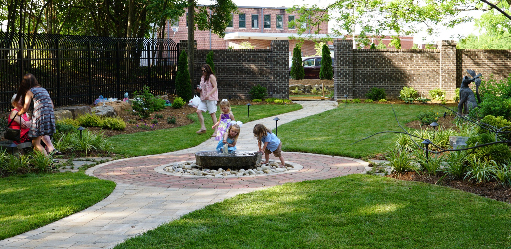
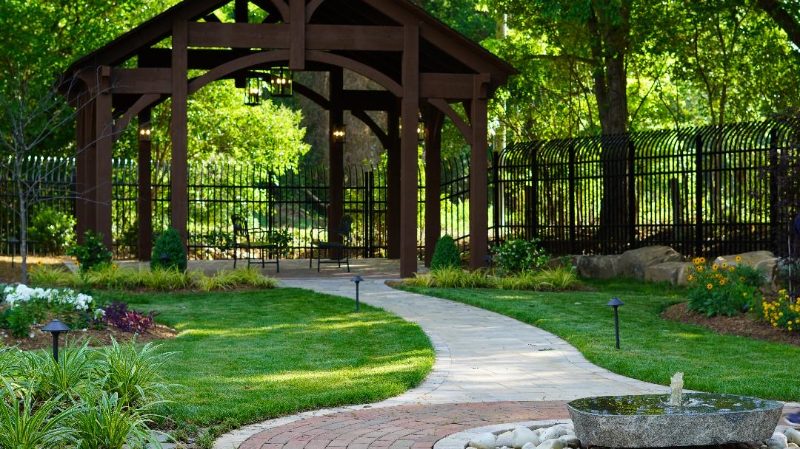
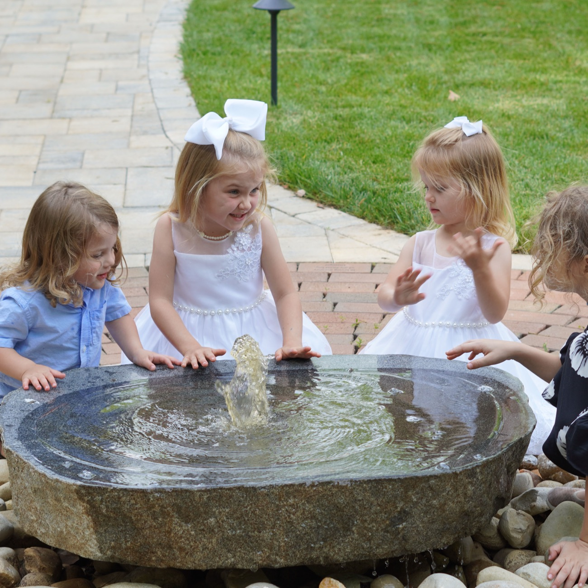
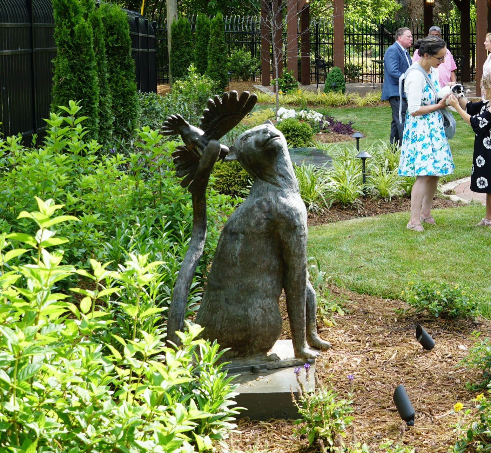
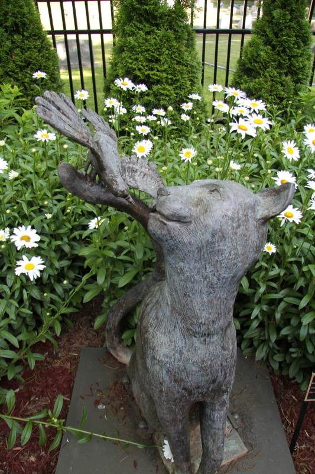
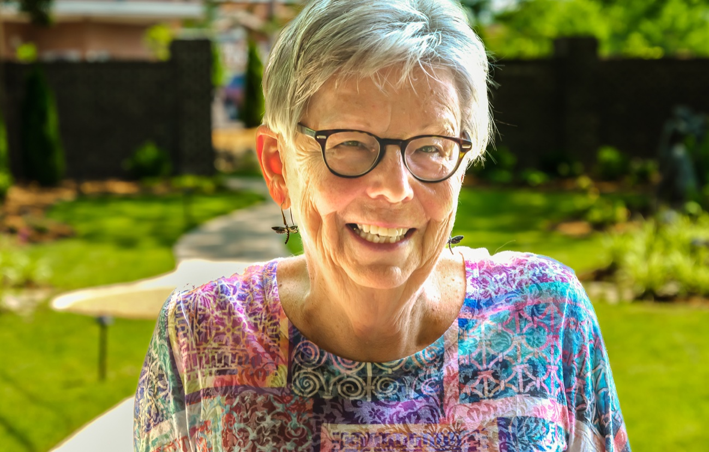
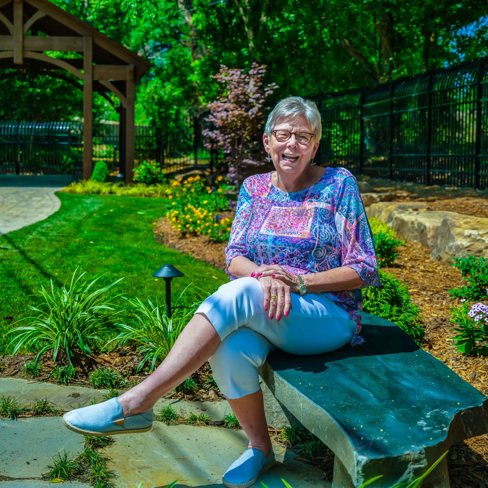

Weddings
Exchange vows beneath the pavilion, framed by greenery and the gentle sound of the fountain.

Welcome to
An intimate garden venue in the heart of historic downtown Gastonia — for weddings, photoshoots, and the moments worth remembering.
A living gift to the Animal League of Gaston County
A Secluded Oasis
The Garden is a secluded space tucked into historic downtown Gastonia — lush, walled, and softly lit. It is the perfect setting for your next event, whether an intimate wedding, a family photoshoot, a birthday, or any life worth marking.
Exchange vows beneath the pavilion, framed by greenery and the gentle sound of the fountain.
A photographer's dream of natural light, brick pathways, blooms, and timeless backdrops.
Birthdays, showers, anniversaries, and reunions — gathered together under open sky.
Wander a while
Ruth's Garden was designed to be lingered in. Each element — the pavilion, the fountain, the bronze companions — was placed with intention and love.

The Pavilion
At the heart of the garden stands a hand-built timber-frame pavilion, its heavy beams and iron lanterns lending warmth to every occasion. It shelters first dances, first looks, and long tables of family — rain or shine.

The Millstone Fountain
A weathered millstone fountain bubbles at the garden's center, ringed by engraved bricks set in memory and honor of beloved pets, friends, and family. It is the garden's quiet pulse — and its living memorial.


Bronze Companions
Bronze sculptures are tucked among the plantings — a nod to the garden's purpose and to the Animal League it supports. Children find them first, arms wrapped around old friends cast in metal.


Our Story
Ruth's Garden is an inviting oasis — a perfect venue for any life event. Ruth Waggoner has loved and supported animals her whole life. When given the opportunity to help the Animal League of Gaston County, she very generously donated the funding to build this magnificent garden.
“She has loved and supported animals her whole life.”
The garden features a beautiful millstone fountain surrounded by engraved bricks, available in memory or honor of a beloved pet, friend, or family member, and a majestic pavilion perfect for any gathering. We hope you will allow us to host your next exciting and memorable event.
Discover the legacyIn Motion
Gallery
Weddings and first birthdays, flower girls and golden anniversaries — a glimpse of the life this little garden has held.
A Living Legacy
Every brick, paver, and planting helps the Animal League of Gaston County care for the animals in our community. It is a way to honor someone you love — and to give that love a permanent home.
Set a brick around the millstone fountain in memory or honor of a beloved pet, friend, or family member.
Lay a larger paver into the garden's pathways — a lasting step for generations to walk upon.
Sponsor stone benches, the pavilion, the butterfly garden, or the trees that shade it all.
Orders are handled securely through the Animal League of Gaston County.
Plan Your Visit
We would love to host your next exciting and memorable event. Reach out to check available dates — we will help you imagine the day.
Tell us about your event
Form not loading? Email ruthsgarden.algc@gmail.com or call 980-777-7279.